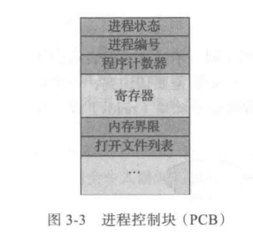

操作系统｜线程
进程管理
进程概念
进程
- 程序是被动实体，进程是
活动实体：当可执行文件加载到内存时，该程序成为进程，一个程序可以对应多个进程 - 进程 = 程序 + 执行状态
进程特征
- 结构特征：进程实体由程序段、数据段和PCB构成
- 动态性：进程是程序的一次执行过程
- 并发性
- 多个进程同时存在于内存中，在一段时间内同时运行
- 本质是程序的
交替运行
- 独立性：进程是独立运行、独立分配资源的基本单位
- 异步性：进程按
独立的、不可预知的速度向前推进 - 交互性：进程之间需要交互
进程状态
牛头图
进程控制块 (Process Control Block, PCB)
- 操作系统中的每个进程用进程控制块来表示

进程调度
- 目标是无论何时都有进程运行，最大化CPU利用率
- 进程调度器选择一个可用进程到CPU上执行
调度队列
- 进程在进入系统时，会加到作业队列中：包括系统内所有进程
- 就绪队列：驻留在内存中的、就绪的、等待运行的进程
- 通常用链表实现
- 设备队列：等待特定I/O设备的进程列表
队列图：圆圈表示资源，箭头表示流向，矩形框表示队列
调度程序
- 长期调度程序：从大容量存储设备（通常为磁盘）的缓冲池中选择进程，加载到内存以便执行。
- 短期调度程序（CPU调度程序）：从准备执行的进程中选择进程，并分配CPU。
- 这两种调度程序的主要区别是执行频率。
- 大多数进程可分为：
I/O密集型进程和CPU密集型进程- I/O密集型进程：执行I/O比执行计算需要花费更多时间
- CPU密集型进程：很少产生I/O请求，花更多时间执行计算。
- 中期调度程序：将进程从内存（或CPU竞争）中移出，从而降低多道程序程度
进程控制
- 在操作系统中，一般把进程控制用的程序段称为原语（原子操作），原语的特点是
执行期间不允许中断，它是一个不可分割的基本单位
进程的创建
-
允许一个进程创建另一个进程
- 创建者称为
父进程，被创建的进程称为子进程。 - 大多数操作系统对进程的识别采用唯一的
进程识别符(pid)，每个进程都有一个唯一的pid
- 子进程可以从操作系统直接获得资源，也可以从父进程获取资源
- 撤销父进程时，需要撤销其子进程
- 创建者称为
-
在操作系统中，
终端用户登录系统、作业调度、系统提供服务、用户程序的应用请求等都会引起进程的创建。 -
创建一个新进程的过程如下：
- 为新进程分配一个pid，并申请一个空白PCB
- 为进程分配资源，为新进程的程序和数据以及用户栈分配空间
- 初始化 PCB 主要包括初始化标志信息、初始化处理机状态信息和初始化处理机控制信息，以及设置进程的优先级等。
- 若进程就绪队列能够接纳新进程，则将新进程插入就绪队列，等待被调度运行
-
创建新进程时，有两种执行可能
- 父进程与子进程并发执行
- 父进程等待，直到某个或全部子进程执行完
-
新进程的地址空间也有两种可能
- 子进程是父进程的复制品
- 子进程加载另一个新程序
-
以UNIX为例
- 通过系统调用
fork()，可以创建新进程 - 新进程的地址空间复制原来进程的地址空间
- 父进程和子进程可以轻松通信
对于子进程，fork()的返回值为0，父进程的返回值为子进程的pid- 系统调用
exec()加载二进制文件到内存中并开始执行 - 系统调用
wait()把进程移出就绪队列，直到子进程终止。 - 调用
exec()用新进程覆盖了进程的地址空间，所以不会返回控制
- 通过系统调用
-
以Windows为例
- 进程创建采用Windows API函数
CreateProcess() - 它类似于fork()，但是它在创建进程时要求将一个指定程序加载到子进程的地址空间
- 进程创建采用Windows API函数
进程的终止
- 通过系统调用
exit()请求操作系统删除自身，进程终止 - 进程可以返回状态值到父进程。所有进程资源都由操作系统释放
- 引起进程终止的事件主要有
- 正常结束，表示进程的任务己完成并准备退出运行。
- 异常结束，表示进程在运行时，发生了某种异常事件，使程序无法继续运行，如存储区越界、保护错、非法指令、特权指令错、运行超时、算术运算铺、 I/O 故障等。
- 外界干预，指进程应外界的请求而终止运行，如操作员或操作系统干预、父进程请求和父进程终止。
- 僵尸进程：进程已经终止，但是其父进程尚未调用wait()。
- 孤儿进程：其父进程尚未调用wait()就终止。
进程切换
- 进程的上下文采用进程PCB表示
- 通常，通过执行
状态保存，保存CPU当前状态；之后，状态恢复重新开始运行
进程间通信
- 协作进程需要有一种进程间通信(InterProcess Communication,IPC)机制

本博客所有文章除特别声明外，均采用 CC BY-SA 4.0 协议 ，转载请注明出处！